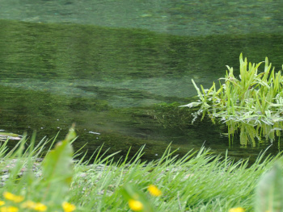
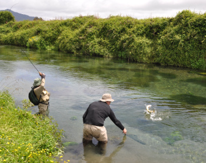
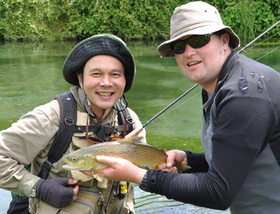

釣行日誌 ＮＺ編 「翡翠、黄金、そして銀塊」
スプリングクリークにて
2010/11/25(THU)-3
ブリントさんの家で昼食を済ませ、三日目の午後は、ホキティカ近郊のスプリングクリークでの釣りとなった。この辺の川は、ディーン君が子供の時から釣りをしていて、彼は自分の手のひらのようによく知っている川なのである。時刻は午後二時を回り、天気は雲が多いものの、時折晴天から日光が差してくるような状況である。風も少ない。まずまずのサイトフィッシング日和である。ところがこの川は、見た目は非常に美しいが、釣るとなると大変難しく、やりがいのある川なのだ。まず、鱒の姿を見つけるのが難しい。川底には水草と藻が密生しており、どれが鱒の影なのか、実に判断しがたい。さらに、川の流れは穏やかだが、水流が複雑に入り組んでいて、なかなか自然にフライを流すと言うことが難しい。ライズがあればなんとか釣りになるのだが、ニンフの釣りとなると、正直、苦行の様相を帯びてくる。
しかし、そんなことを言っていても始まらないので、ディーン君のガイドを受け、鰐部さんと釣り上がることにした。すると、しばらく鱒の姿を探していたディーン君が、前方の一点を指さした。よぉく眼を凝らして見ていると、藻の間に鱒の影が見える。ライズはしていないので、どうやら水中のエサを食べているようだ。

鰐部さんが譲ってくれたので、ここは気合いを入れて僕が狙うことにした。氷河の川で効果が有ったニンフを結び、鱒めがけて投射する。岸の上からはよく見えていた鱒の姿も、流れの中に立ち込むと、視点が低くなって非常に見づらい。何度かのミスキャストの後、狙った通りの所へニンフが落ちた。
「ストライク！」
ディーン君の声が高らかに響き、すかさずロッドを立てると心地よい重量感と躍動がラインから伝わってくる。鱒は下流へと走り、川の流れを利用して抵抗する。ロッドが倒されないようしっかりと支え、リールでのファイトを始める。それほど大きくはないが、力強く引くブラウンである。なんとか岸辺近くに寄せてくると、ディーン君がネットを取り出してランディングの体勢に入る。その瞬間、鱒がジャンプして抵抗する。

大きな水しぶきをあげて着水した鱒は、さらなる抵抗を見せるが、とうとう力尽きてディーン君のネットに収まった。
「おめでとう！」
「ありがとう！」
歓喜の握手を交わして記念写真を写す。僕は、1999年以来のウェストランドのスプリングクリークでの鱒に感動して、本当に嬉しかった。

釣行日誌ＮＺ編 目次へ
サイトマップ
ホームへ
お問い合わせ